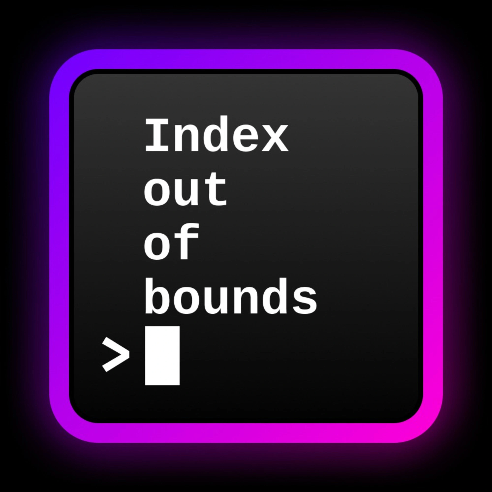

I'm Christian, iOS Freelancer with 7 years of experience
I care a lot about human friendly interface design and excellent code quality. Don’t take my word for it, check out my portfolio.


My Podcast
My Portfolio
Talk is easy, action is what counts. View a list of selected projects I have been involved in.
My Blog
Humble thoughts and insights on software development, design and the human side of working in tech.
Agentic Engineering: 11 Tips for iOS Development with AI
Saturday, October 18, 2025
Practical tips for using AI agents like Claude Code to build production-quality iOS applications. Learn how to manage context, structure your workflow, and scale your development with AI...
NavigationSplitView's Hidden Trap – Don't Get Stuck Like I Did
Friday, May 16, 2025
NavigationSplitView seems easy to use. And Apple's example projects are. But step just a little outside the basic path, and you can easily run into problems...
I Hated Kotlin... Until I Didn’t – Why KMP Might Be Worth It for iOS Developers
Sunday, February 9, 2025
Taking a closer look into Kotlin and KMP can feel like bonding with the enemy for an iOS developer. I really wanted to hate it, but my journey took an unexpected turn. This is my story of moving from resistance to understanding, exploring the quirks, challenges, and ultimately rediscovering what it truly means to be a developer...
The Issue with Protocol Extensions
Sunday, June 23, 2024
Protocol extensions are a great way to simplify the creation of conforming types or enable types to perform actions by simply adding a protocol conformance. However, this convenience comes with its own set of drawbacks. Let's explore why protocol extensions might not always behave as expected and how to effectively resolve these issues...
Adding Features to an existing Codebase
Thursday, May 9, 2024
Updating a legacy system can feel like unraveling a complex knot, especially when the changes impact several parts of the app. This is a challenge I face often, and I've been on a quest to find a strategy that works consistently for me...